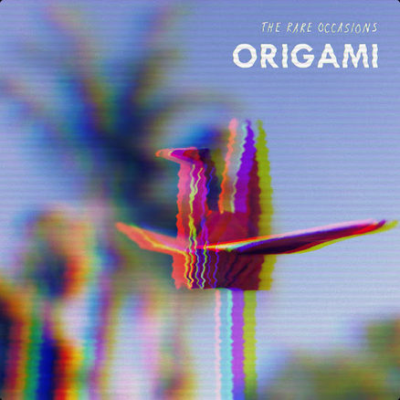

| MUSICA EN INGLÉS | ||||
|  |
Origami (The Rare Occasions)
|
|||
| ARTISTAS INVOLUCRADOS | ||||

|
||||
| SINOPSIS | ||||
|
"Origami" es una canción que combina melodías vibrantes con letras profundas. La canción explora temas como la fragilidad de las relaciones humanas y la complejidad de las emociones, utilizando la metáfora del origami para representar cómo las personas se doblan y transforman. Con un ritmo pegajoso y un sonido característico de indie rock, "Origami" es una de las canciones más destacadas de The Rare Occasions. |
||||
| CURIOSIDADES | ||||
|
"Origami" fue lanzada en 2016 como parte del álbum "Futureproof", que consolidó a The Rare Occasions en la escena indie rock. La canción ha ganado popularidad en plataformas como Spotify y YouTube, donde ha acumulado millones de reproducciones. The Rare Occasions son conocidos por su enfoque DIY y su habilidad para crear canciones que combinan energía y profundidad emocional. |
||||
| DISPONIBILIDAD | ||||
|
|
Disponibilidad de "Origami" de The Rare Occasions La canción "Origami" de The Rare Occasions está disponible en las siguientes plataformas de streaming. ¡Haz clic en los enlaces para escucharla! |
|||